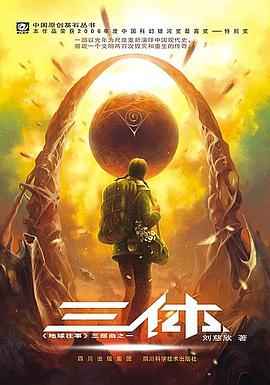
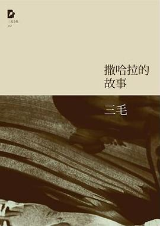
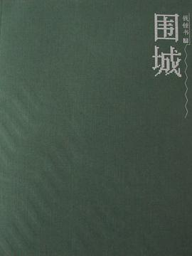
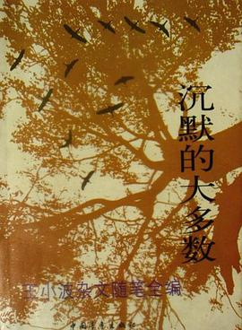

高分图书推荐：
|  |
《三体》作者: 刘慈欣文化大革命如火如荼进行的同时。军方探寻外星文明的绝秘计划“红岸工程”取得了突破性进展。但在按下发射键的那一刻，历经劫难的叶文洁没有意识到，她彻底改变了人类的命运。地球文明向宇宙发出的第一声啼鸣，以太阳为中心，以光速向宇宙深处飞驰…… 四光年外，“三体文明”正苦苦挣扎——三颗无规则运行的太阳主导下的百余次毁灭与重生逼迫他们逃离母星。而恰在此时。他们接收到了地球发来的信息。在运用超技术锁死地球人的基础科学之后。三体人庞大的宇宙舰队开始向地球进发…… 人类的末日悄然来临。 |
《人間失格》作者:太宰治全书由作者的序言、后记，以及主角大庭叶藏的三个手札组成，描写主角从青少年到中年，为了逃避现实而不断沉沦，经历自我放逐、酗酒、自杀、用药物麻痹自己，终于一步步走向自我毁灭的悲剧，在自我否定的过程中，抒发自己内心深处的苦闷，以及渴望被爱的情愫…… 透过主角叶藏的人生遭遇，可以说太宰治巧妙地将自己一生的经历与思想表达出来，并藉此提出身为人最真切的痛苦问题。从滞涩的文中更可体会其内心深切的苦楚，在完成本篇作品之后，太宰治终归还是选择了投水的方式，为他自己划下最后的句点。因此，《人间失格》算是太宰治半自传性作品。 作品中太宰治巧妙地将自己的人生与思想，隐藏于主角叶藏的人生遭遇，藉由叶藏的独白，窥探太宰治的内心世界——“充满了可耻的一生”。在发表该作品的同年，太宰治自杀身亡。 |
|

|
《白夜行》作者:[日] 东野圭吾
“只希望能手牵手在太阳下散步”，这个象征故事内核的绝望念想，有如一个美丽的幌子，随着无数凌乱、压抑、悲凉的故事片段像纪录片一样一一还原：没有痴痴相思，没有海枯石烂，只剩下一个冰冷绝望的诡计，最后一丝温情也被完全抛弃，万千读者在一曲救赎罪恶的凄苦爱情中悲切动容…… |
|  |
《撒哈拉的故事》作者:三毛《撒哈拉的故事》主要描写了三毛和荷西在撒哈拉沙漠生活时的所见所闻，与当地相识朋友的故事，每个故事都透露出这个隐忍女子对生活的热爱和面对困难的坚定。由十几篇精彩动人的散文结合而成，其中《沙漠中的饭店》，是三毛适应荒凉单调的沙漠生活后，重新拾笔的第一篇文章，从此之后，三毛便写出一系列以沙漠为背景的故事。 三毛用自己的心去适应、关怀这片大沙漠，在她的笔下，那些撒哈拉沙漠的人和物变得丰富多彩。三毛以一个流浪者的口吻，轻松地讲述着她在撒哈拉沙漠零散的生活细节和生活经历：沙漠的新奇、生活的乐趣，千疮百孔的大帐篷、铁皮做的小屋、单峰骆驼和成群的山羊。书中无论是荷西把粉丝当做雨来吃，还是他们简单得不能再简单的婚礼、去海边打鱼、白手起家建立他们沙漠上最美丽的房子，都渗透着彼此间浓浓的温馨的爱意。 |
|  |
《围城》作者:钱钟书《围城》包含着深厚的思想意蕴。一是社会批判层面。作品通过主人公方鸿渐的人生历程，对20世纪三、四十年代国统区的国政时弊和众生相进行了抨击，包括对上海洋化商埠的腐败堕落、对内地农村的落后闭塞，对教育界、知识界的腐败现象的讥讽。二是文化批判的层面。这一点，主要是通过对“新儒林”的描写和对一批归国留学生或高级知识分子形象的塑造来实现的。《围城》中的人物，大多患有崇洋症，但骨子里还是传统文化起主导作用。方鸿渐是“新儒林”中尚有正义感的人物，他的出国留洋，目的是“光耀门楣”，好比前清时代花钱捐个官。他的懦弱的性格，悲剧的结局，正是传统文化所致。作品通过这些人物病态性格的剖析，对中国传统文化进行了深刻的反思和批判。第三个层面则是对人生、对现代人命运的哲理思考，深入到人本的形而上的层次，诸如对人的基本生存处境和人生的根本意义的探讨，对人的基本根性和人际间的基本关系的探讨。 |
|  |
《沉默的大多数》作者:王小波《沉默的大多数》作者王小波，他所虚构的艺术之美，以及他通过对现实世界的批评所传播的自由主义理念，已经在这个世界的文化和思想宝库中占据了一席之地。而到今天，这些话语、这些思想仍是我们的社会所需要的。我们从王小波的长盛不衰只能得出这样的结论：在中国，自由主义理念的传播还任重而道远。王小波的作品一直盛行不衰，王小波的小说在世界文学之林中创造出属于他的美，这美就像一束强光，刺穿了时间的阻隔，启迪了一代又一代刚刚开始识字读书的青年的心灵。 "我对自己的要求很低：我活在世上，无非想要明白些道理，遇见些有趣的事。倘能如我所愿，我的一生就算成功。为此也要去论是非，否则道理不给你明白，有趣的事也不让你遇到。我开始得太晚了，很可能做不成什么，但我总得申明我的态度，所以就有了这本书——为我自己，也代表沉默的大多数。" |